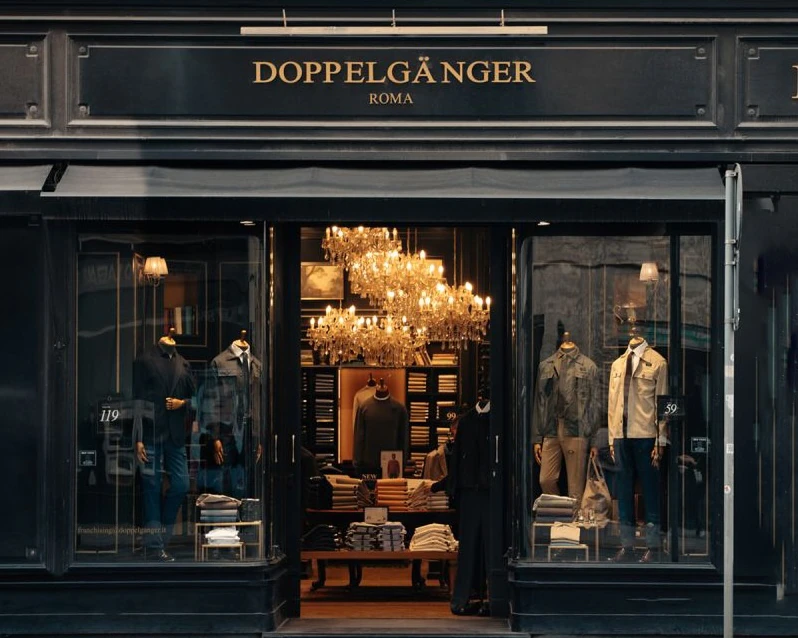
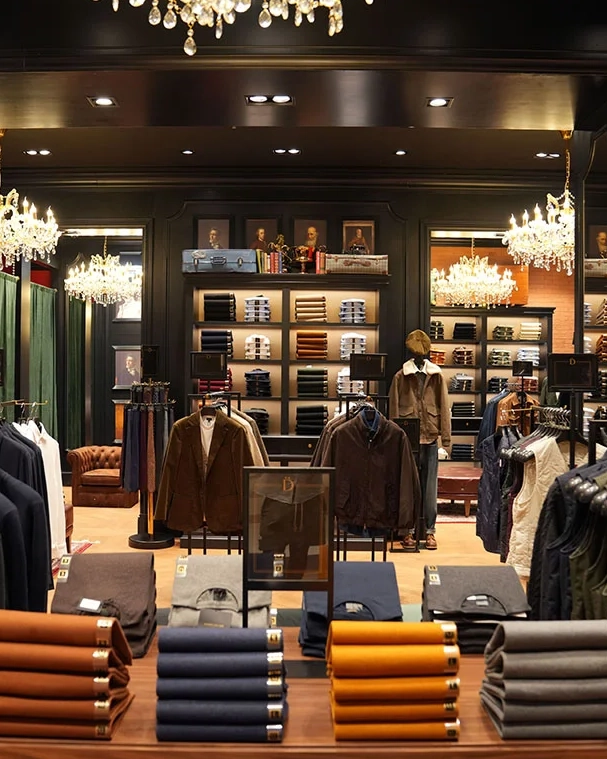

Esperienza in Boutique
Se vicino a te c'è una Boutique Doppelgänger, raggiungici per vivere un'esperienza d'acquisto unica, oppure lasciati coinvolgere da questo racconto per immergerti nel nostro mondo.
Entrare in una Boutique Doppelgänger significa avere accesso a un luogo familiare e al contempo sofisticato. La filosofia del Brand, secondo cui chi veste Doppelgänger sia sempre esempio di unicità e stile, che esso indossi un abito, o che scelga un outfit all'insegna del comfort, si riflette appieno in tutti i nostri store, che regalano la percezione di Doppelgänger come di un luogo lussuoso e accogliente, elegante e accessibile, inclusivo ed esclusivo allo stesso tempo.

Accoglienza personalizzata e innovazione
I nostri store invitano a essere vissuti con grande naturalezza, luoghi dove l'esperienza d'acquisto è su misura del cliente. È così che concretizziamo la Dress Therapy, dando un'assistenza personalizzata e mirata a chi entra a far parte del mondo Doppelgänger: un mondo capace di dare forma a ogni desiderio.
Oggi essere cliente Doppelgänger significa poter contare su strumenti numerosi e innovativi, che facilitano l'acquisto e rendono l'esperienza completa, a 360 gradi: dalla scelta del prodotto al pagamento.
Le tecnologie a disposizione in boutique aiutano a comprendere esigenze, gusti e preferenze di ciascun cliente. Sono in continua evoluzione e vengono utilizzate con un solo scopo: rendere ogni cliente pienamente soddisfatto, sempre nel pieno rispetto della privacy.
Servizi, stile e qualità con un click
Doppelgänger è in continua espansione. Per chi predilige gli acquisti online, il nostro e-commerce offre le stesse possibilità, con una gamma di prodotti altrettanto variegata e unica.
Grazie a un servizio clienti attento e puntuale, ci prendiamo cura dei clienti Doppelgänger anche a distanza: garantiamo le spedizioni anche in Europa e negli Stati Uniti e accompagniamo ogni cliente nel viaggio d'acquisto, il tutto a portata di click.
